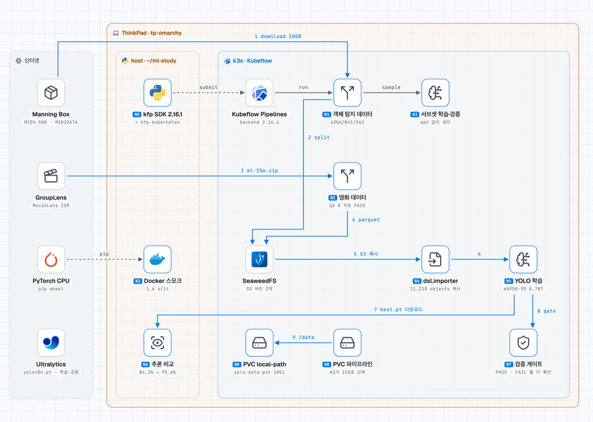
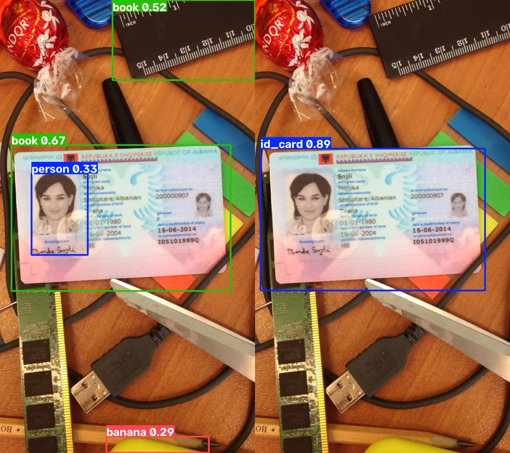

mlops
MLOps 5편. 실습 - 데이터 준비 파이프라인, YOLO 학습·검증 게이트, PVC
홈서버 k3s의 멀티유저 Kubeflow에서 책 7.3~9.1장을 다시 돌리며 만난 권한 제한과 버전 차이를 실측값으로 정리합니다
2026.11.15 · 36 min read
1부. 실습 환경과 비교 기준
1.1 같은 클러스터에 더한 실습 흐름 아홉 개
4편에서 KServe 서빙과 드리프트 모니터링을 올린 홈서버 k3s 클러스터에 책 7.3절부터 9.1절까지를 더했습니다. 기존 InferenceService와 Argo CD 앱은 그대로 두고, KFP 파이프라인과 PVC만 새로 만들었습니다.

화살표 번호 순서대로 보면 다음과 같습니다.
download_dataset이 Manning Box에서 신분증 데이터셋 FULL을 받아 풉니다(2.1절).split_dataset이 이미지와 라벨을 파일명으로 짝지어 75/15/10으로 나누고, 결과가 SeaweedFS에 올라갑니다(2.1절).- 영화 데이터 파이프라인이 GroupLens에서
ml-25m.zip을 받습니다(2.3절). - CSV를 Parquet으로 바꾸고 나눠서
datasets/ml-25m/에 올립니다(2.3절). - 1·2번 결과를 S3 서버 측 복사로 고정 경로에 둡니다(3.5절).
dsl.importer가 그 경로를 가져와 YOLOv8n 학습 컴포넌트에 넘깁니다(3.6절).- 학습한
best.pt를 호스트로 내려받아 Docker에서 기본yolov8n.pt와 비교합니다. KFP 파이프라인이 아닙니다(4.1절). - 검증 게이트가
best.pt를 검사해 run을 통과시키거나 실패시킵니다(4.2절). - PVC 파이프라인이 MINIDATA를 PVC
/data에 받고, 모든 태스크가 같은 PVC를 마운트합니다(5부).
1.2 스터디 실습 환경과 다른 곳 - 멀티유저, 8코어, KFP 2.16.1
이 글의 비교 기준은 CloudNet@ 스터디 자료에 실린 실습 로그입니다. 같은 책 코드를 돌렸지만 환경이 꽤 다릅니다.
- 스터디 실습 - 스터디 자료에 실린 실습 로그입니다.
- kind 클러스터
book-env, KFP 2.4.1 단독 설치(단일 사용자), SDKkfp==2.9.0 - CPU 16코어, 메모리 14GiB, SeaweedFS 3.85, StorageClass
standard
- kind 클러스터
- 이 실습 - 홈서버 노트북 한 대의 k3s v1.36.5입니다.
- KCD 26.03.1(KFP 2.16.1, 멀티유저 프로필 네임스페이스), SDK
kfp==2.16.1과kfp-kubernetes==2.16.1 - CPU 8코어, 메모리 30GiB, SeaweedFS 4.00, StorageClass
local-path
- KCD 26.03.1(KFP 2.16.1, 멀티유저 프로필 네임스페이스), SDK
이 차이 가운데 실습 결과를 바꾼 것은 세 가지였습니다.
- 멀티유저 Kubeflow
- run은 프로필 네임스페이스
kubeflow-user-example-com에서 돌고, 그 네임스페이스는 Pod Securitybaseline입니다(3.2절). - 제출은
default-editor서비스 계정 토큰으로 합니다. 토큰 없이kfp.Client(host=...)만 쓰는 스터디 코드는 그대로 쓸 수 없습니다.
- run은 프로필 네임스페이스
- KFP 2.16.1
CreatePVC가 같은 이름을 만나면 실패합니다(5.3절). 2.4.1은 기존 PVC를 그대로 썼습니다.
- 8코어
- 노드 예약 여유가 약 3 CPU라 학습 파드에 request와 limit을 따로 줘야 했습니다(3.4절).
나머지 숫자는 대부분 스터디 실습과 같게 나왔습니다.
2부. 데이터 준비 파이프라인
2.1 객체 탐지 데이터 - 10,279,296,832바이트를 경로로 넘기기
7.3.1절의 파이프라인은 컴포넌트 세 개입니다.
download_dataset ──▶ split_dataset ──▶ output_file_contents
(Manning Box .gz) (75/15/10) (validation 5개 출력 + 짝 검사)
데이터는 MIDV-500 계열 신분증 사진과 YOLO 라벨입니다. 라벨 한 줄은 0 0.475926 0.476042 0.772222 0.282292처럼 클래스 번호와 정규화한 박스 중심·너비·높이입니다. YOLO는 images/CA01_01.tif의 라벨을 labels/CA01_01.txt에서 찾기 때문에, 분할할 때 이 이름 짝이 깨지면 안 됩니다.
책 코드를 그대로 돌리면 실패합니다. 스터디 실습에서 찾은 수정 다섯 개를 같이 적용했습니다.
BASE_PATH = "MINIDATA"→"DATA"- FULL tar의 최상위 폴더는
DATA입니다.MINIDATA로 두면 glob이 빈 목록을 돌려주고train_test_split이ValueError를 냅니다.
- FULL tar의 최상위 폴더는
- 이미지와 라벨을 파일명(stem)으로 짝지은 뒤 정렬해서 분할
- 책은 두 목록을 따로 glob해서 나눕니다. 순서가 어긋나면 짝이 틀어질 수 있습니다.
- 다운로드
chunk_size1KiB → 1MiB,tqdm(mininterval=30)- 1KiB면 10GB에 약 1,000만 번 반복하고 진행 로그가 쏟아집니다.
- 책 Listing 7.23의 출력 이름
x_val_output→validation_dataset- 실제 출력 이름과 달라 컴파일 오류가 납니다.
- 확인 컴포넌트는
validation_dataset만 받음
결과는 다음과 같습니다(run od-dataprep-1114).
| 단계 | 값 |
|---|---|
| 다운로드 | 10,279,296,832바이트, 7분 16초(23.5MB/s) |
| 압축 해제 | 파일 11,218개, 최상위 DATA |
| 짝 맞춤 | 이미지 5,609 · 라벨 5,609 · 짝 5,609 · 짝 없는 파일 0 |
| 분할 | train 4,206 / val 841 / test 562 |
| 확인 | validation 이미지 841 · 라벨 841 · 짝 불일치 0 |
숫자는 스터디 실습과 모두 같습니다. 분할 간 중복이 없다는 점은 split_dataset 안의 assert로 확인했습니다.
컴포넌트는 Output[Dataset]의 로컬 경로(/minio/mlpipeline/private-artifacts/.../download-dataset/<id>/output_dataset)에 파일을 쓰기만 합니다. KFP 런처가 그 디렉터리를 SeaweedFS에 올리고, 다음 컴포넌트의 런처가 같은 경로로 내려받습니다.
4편 5.1절에서 잰 값 전달 한도(128KiB, 3MiB)와 관계없이 동작하는 이유가 이것입니다.
2.2 SeaweedFS 볼륨 한도 - 4.00에서는 364개로 자동 계산
스터디 실습은 다운로드 결과를 올리다가 status code: 500으로 실패했습니다. Kubeflow의 minio가 실제로는 SeaweedFS 3.85였고, 기동 인자가 -volume.max=100 -master.volumeSizeLimitMB=64라 한도가 약 6.4GB였기 때문입니다. 원본과 분할본을 합치면 약 33.8GB가 필요해서, -volume.max=1000으로 올려 해결했습니다.
이 클러스터에서는 그 수정이 필요 없었습니다. 실행 전에 weed shell의 volume.list로 확인한 값은 다음과 같습니다.
Topology volumeSizeLimit:1024 MB hdd(volume:49/364 active:49 free:315)
SeaweedFS 4.00은 기동 인자에 -volume.max가 없으면 디스크 여유를 보고 볼륨 수를 정합니다. 여기서는 1GB 볼륨 364개, 약 364GB였습니다. 같은 "minio"라도 버전에 따라 한도가 6.4GB일 수도 364GB일 수도 있으니, 큰 데이터를 올리기 전에 volume.list를 한 번 보는 편이 낫습니다.
2.3 영화 추천 데이터 - Parquet와 QA 지표 8개
7.3.2절은 MovieLens 25M을 9장의 추천 모델용으로 준비합니다. 컴포넌트는 여섯 종류이고, csv_to_parquet와 put_to_minio를 두 번씩 써서 태스크는 여덟 개입니다.
download ─▶ unzip ─┬▶ csv_to_parquet(ratings) ─▶ split ─▶ put_to_minio(u2) ─┐
└▶ csv_to_parquet(movies) ──────────▶ put_to_minio(u1) ─┴▶ qa_data
원본 코드에서 두 곳을 고쳤습니다.
split_dataset의ratings_df.user_id.max(),item_id.max()삭제- 실제 열 이름은
userId,movieId라AttributeError가 납니다. 계산한 값도 쓰지 않습니다.
- 실제 열 이름은
except BucketAlreadyExists→except Exception- u1과 u2가 동시에 버킷을 만들려고 할 수 있습니다.
qa_data에는 스터디 자료의 옵션 과제대로 Output[Metrics]와 Output[Markdown]을 더했습니다. 이 QA는 movies 파일도 읽으므로 순서를 .after(u1, u2)로 바꿨습니다. 저장소 코드의 .after(u2)만 두면 movies 업로드가 끝나기 전에 QA가 시작될 수 있습니다.
결과는 다음과 같습니다(run mr-dataprep-A-1114).
| 지표 | 값 |
|---|---|
ml-25m.zip |
261,978,986바이트 |
| ratings | 25,000,095행, 열 userId, movieId, rating, timestamp |
| 분할 | train 18,750,071 / val 3,750,014 / test 2,500,010 |
| movies | 62,423행 |
train_ratio |
0.75 |
rating_mean |
3.5336 |
KFP UI의 Visualization 탭에 Metrics 표와 Markdown 리포트(PASS 세 줄)가 나옵니다. 값은 스터디 실습과 같습니다.
스터디 자료의 B안(target_image로 의존성을 이미지에 미리 굽는 방식)은 하지 않았습니다. 2026-11-08 스터디 강의(녹취 58:22~58:58)에서 강사가 내부 레지스트리가 없으면 번거로우니 굳이 하지 말라고 했고, 스터디 실습에서는 오히려 split이 약 4배 느려졌습니다. 이미지에 pyarrow와 fastparquet이 같이 들어가서 pandas가 pyarrow 엔진을 골랐기 때문입니다.
2.4 datasets 버킷과 프로필 키 - Secret을 환경 변수로
put_to_minio와 qa_data는 KFP 아티팩트가 아니라 datasets 버킷에 직접 씁니다. 책 코드는 minio/minio123을 하드코딩합니다. 멀티유저 Kubeflow에서는 두 가지가 걸립니다.
- 사용자 네임스페이스의
mlpipeline-minio-artifact키는 프로필 전용mlpipeline버킷의private-artifacts/<네임스페이스>/아래만 쓸 수 있습니다. 다른 버킷은 403이 납니다(2편 실습에서 확인).
- 키를 코드에 쓰면 컴파일한 YAML과 KFP 기록에 남음
그래서 관리자 키를 담은 Secret feast-s3-cred(4편에서 사용자 네임스페이스로 복사해 둔 것)를 kfp-kubernetes로 넣었습니다.
kubernetes.use_secret_as_env(
task, secret_name="feast-s3-cred",
secret_key_to_env={"accesskey": "AWS_ACCESS_KEY_ID", "secretkey": "AWS_SECRET_ACCESS_KEY"})
boto3와 pyarrow는 AWS_ACCESS_KEY_ID, AWS_SECRET_ACCESS_KEY를 자동으로 읽습니다. 컴파일한 YAML에는 secretKeyRef만 남고 키 값은 남지 않습니다.
3부. YOLO 학습 컴포넌트
3.1 container component가 필요한 이유
8장은 7.3.1절에서 나눈 데이터로 YOLOv8n을 학습합니다. 학습 코드 자체는 짧습니다.
model = YOLO("yolov8n.pt") # COCO로 미리 학습한 가중치에서 시작
model.train(data="data.yaml", imgsz=640, epochs=epochs, batch=batch,
project=project_path, name="yolov8n_custom")
data.yaml에는 train·val·test 이미지 경로와 클래스 이름(0: id_card)이 들어갑니다. 책은 이 학습을 @dsl.component 대신 @dsl.container_component로 만듭니다.
@dsl.component- 파이썬 함수 하나를 직렬화해 기본 이미지에서 실행합니다. 추가 설치는
packages_to_install의 pip 패키지뿐입니다.
- 파이썬 함수 하나를 직렬화해 기본 이미지에서 실행합니다. 추가 설치는
@dsl.container_component+dsl.ContainerSpec- 이미지, 셸 명령, 인자를 직접 줍니다. 시스템 패키지 설치나 heredoc으로 스크립트 파일을 만드는 단계를 넣을 수 있습니다.
책이 container component를 고른 이유는 OpenCV가 요구하는 libGL.so.1을 apt로 설치해야 해서입니다. 스터디 실습은 python:3.11-slim(Debian 13)에 libgl1-mesa-glx 패키지가 없어 libgl1로 바꿨고, heredoc 들여쓰기, 쉼표 누락, CPU 전용 torch 휠, 버전 고정(ultralytics==8.4.207, torch==2.15.0)을 고쳤습니다.
이 실습도 그 수정을 따랐습니다. torchvision은 2026-11-14에 확인한 PyTorch CPU 인덱스의 최신 Python 3.11용 휠인 0.29.1을 torch 2.15.0과 함께 고정했고, 이 조합으로 스모크와 파이프라인을 실행했습니다.
3.2 파드 안에서 실패하는 apt-get - capabilities drop ALL
24/8/8장 서브셋으로 처음 돌린 학습 태스크가 이렇게 실패했습니다.
ImportError: libxcb.so.1: cannot open shared object file: No such file or directory
ultralytics 8.4.207은 GUI판 opencv-python을 설치하고, 이 패키지는 X11 라이브러리 libxcb도 요구합니다. apt 목록에 libxcb1을 더했고, 호스트 Docker에서는 학습이 통과했습니다. 그런데 KFP 파드에서는 같은 오류가 다시 났습니다.
파드 로그 앞부분에 원인이 있었습니다.
E: setgroups 65534 failed - setgroups (1: Operation not permitted)
E: seteuid 42 failed - seteuid (1: Operation not permitted)
W: chown to _apt:root of directory /var/lib/apt/lists/partial failed
파드 스펙을 보면 이유가 나옵니다.
spec.securityContext: {"seccompProfile":{"type":"RuntimeDefault"}}
containers[main].securityContext: {"allowPrivilegeEscalation":false,"capabilities":{"drop":["ALL"]}, ...}
namespace label: pod-security.kubernetes.io/enforce=baseline
컨테이너는 root(uid 0)로 돌지만 리눅스 capability를 전부 뺀 상태입니다. apt는 다운로드를 _apt 사용자로 넘기려고 setgroups, seteuid, chown을 부르는데, 이 호출에 필요한 CAP_SETGID, CAP_SETUID, CAP_CHOWN이 없습니다. kind 단일 사용자 설치인 스터디 환경에는 이 제한이 없어서 같은 코드가 통과했습니다.
해결은 apt를 쓰지 않는 쪽으로 했습니다.
pip install torch==2.15.0 torchvision==0.29.1 --index-url https://download.pytorch.org/whl/cpu
pip install ultralytics==8.4.207 pyyaml
pip uninstall -y opencv-python
pip install opencv-python-headless
opencv-python-headless는 GUI 모듈이 빠진 빌드라 libGL과 libxcb가 필요 없습니다. ultralytics가 의존성으로 opencv-python을 다시 끌어오므로 설치 뒤에 지우고 바꿉니다.
호스트 스모크도 docker run --cap-drop ALL --security-opt no-new-privileges로 파드와 같은 조건을 맞춰 다시 시험했습니다. 처음 스모크가 통과한 이유는 Docker 기본 설정이 capability 일부를 남기기 때문이었습니다.
3.3 && 목록과 set -e
3.2절의 실패가 apt 단계가 아니라 Python import에서 드러난 데는 셸 규칙이 한몫했습니다. 스크립트는 set -e로 시작했지만, 설치 줄이 이렇게 묶여 있었습니다.
set -e
apt-get update -qq && apt-get install -y -qq libgl1 libglib2.0-0 libxcb1 > /dev/null
bash는 &&, || 목록 안에서 마지막이 아닌 명령이 실패하면 set -e로 스크립트를 멈추지 않습니다. apt-get update가 실패하자 apt-get install을 건너뛰고 목록 전체가 실패로 끝났지만, 스크립트는 다음 줄로 넘어갔습니다. pip 줄도 A && B > log || (...) 형태라 리디렉션이 B에만 걸려 있었습니다.
지금은 한 줄에 명령 하나씩 둡니다. 어느 명령이 실패해도 그 줄에서 태스크가 멈추고, KFP UI에 실패한 단계가 그대로 나옵니다.
3.4 CPU request와 limit - 예약 여유 3,048m
스터디 실습은 학습 태스크에 set_cpu_limit("12").set_memory_limit("6G")만 줬습니다. 16코어 노드에서는 문제가 없지만, 이 노드에서 그대로 숫자만 낮추면 학습 파드가 Pending에 걸립니다.
노드 allocatable CPU 8
기존 파드 requests 합계 4,952m (KServe, Istio, Kubeflow, Argo CD, ...)
예약 가능 3,048m
쿠버네티스는 limit만 있고 request가 없는 컨테이너에 request = limit을 넣습니다. set_cpu_limit("6")만 주면 request도 6이 되고, 3,048m보다 커서 스케줄러가 배치하지 못합니다.
사용률이 낮아도 마찬가지입니다. 스케줄러는 실제 사용량이 아니라 request 합계로 판단하기 때문입니다.
그래서 둘을 나눴습니다.
| 태스크 | CPU request / limit | 메모리 request / limit |
|---|---|---|
| 학습 | 2 / 6 | 4G / 6G |
| 검증 | 1 / 2 | 2G / 4G |
학습 태스크에는 kubernetes.empty_dir_mount(task, volume_name="dshm", mount_path="/dev/shm", medium="Memory", size_limit="1Gi")도 붙였습니다. 컨테이너의 기본 /dev/shm은 64MiB라 PyTorch DataLoader 워커가 공유 메모리를 쓰다 죽을 수 있습니다. 워커 수는 workers=2로 줄였습니다.
3.5 dsl.importer 고정 경로 - 객체 11,218개, 1분 49초
학습을 시도할 때마다 2.1절의 다운로드·분할(약 25분)을 다시 돌리면 실험 한 번이 너무 깁니다. 스터디 실습은 캐시를 켜 봤지만 같은 컴포넌트가 다시 실행돼서, 분할 결과를 고정 경로에 복사하고 dsl.importer로 가져오는 방식으로 바꿨습니다. 이 실습도 같은 방식을 썼습니다.
mlpipeline/private-artifacts/kubeflow-user-example-com/v2/artifacts/data-preparation-pipeline/<run>/split-dataset/<id>/train_dataset/...
│ S3 copy_object (서버 측 복사, 16 스레드)
▼
mlpipeline/private-artifacts/kubeflow-user-example-com/datasets/od/split/train_dataset/...
복사 대상 경로를 사용자 접두사 private-artifacts/kubeflow-user-example-com/ 아래로 잡은 이유는 2.4절과 같습니다. 파이프라인 런처는 프로필 키로 importer 경로를 읽으므로, 이 접두사 밖에 두면 403이 납니다.
- 복사 - 객체 11,218개(train 8,412 · val 1,682 · test 1,124), 1분 49초. 원본과 사본의 개수를 다시 세어 대조했습니다.
- 확인 run
ch08-n4-check-1114- importer 3개 →count_files, train 4,206 / val 841 / test 562, 짝 불일치 0.
importer 방식의 장점은 계보가 남는다는 점입니다. 학습 run의 입력 아티팩트에 minio://mlpipeline/.../datasets/od/split/train_dataset URI가 기록됩니다. 대신 사본이 약 16GB를 더 차지하고, 분할 비율이나 seed를 바꾸려면 분할을 다시 돌려 사본을 갈아 끼워야 합니다.
3.6 1 epoch 학습 결과 - val mAP50-95 0.787
전체 학습에 앞서 두 번 시험했습니다.
- 호스트 Docker 스모크 - 24/8/8장, epochs 1, batch 4,
--cpus 6- 설치 61초, 학습 27초, 6 iteration을 iteration당 1.6초에 끝냈습니다.
best.pt는 6,477,354바이트로 스터디 실습의 6.5MB와 같습니다. - 이 속도로 전체 학습(4,206장, batch 8, 526 iteration)을 30~45분으로 추정했습니다.
- 설치 61초, 학습 27초, 6 iteration을 iteration당 1.6초에 끝냈습니다.
- 서브셋 파이프라인
ch08-n3-subset-1114c- importer →sample_subset→ 학습 → 검증- train 24장으로 1 epoch 학습하고 val 8장에서 평가했습니다. mAP50-95 0.0054, mAP50 0.0353, precision 0.0018, recall 0.5로 스터디 실습 C단계와 같습니다.
- 이 단계는 정확도가 아니라 importer, 학습, 검증 컴포넌트의 연결을 확인하는 용도입니다.
전체 run ch08-n5-full-1114는 importer 3개 → 학습(epochs 1, batch 8) → 검증 구조입니다. 스터디 실습 D단계는 다운로드·분할까지 포함해 53분 33초였는데, 이 run은 importer로 그 두 단계를 건너뛰었습니다.
| 항목 | 스터디 실습 D | 이 실습 |
|---|---|---|
| 학습 루프 | 0.357시간(약 21분) | 0.514시간(약 31분) |
| 워크플로 전체 | 53분 33초(다운로드·분할 포함) | 40분(importer) |
| val mAP50-95 | 0.8317 | 0.787 |
| val mAP50 | 0.9772 | 0.974 |
| val precision · recall | 0.9795 · 0.9572 | 0.975 · 0.939 |
검증은 둘 다 ultralytics/ultralytics:8.0.194-cpu 이미지, batch 1, val 841장입니다. 8.4.207로 학습한 best.pt를 8.0.194가 문제없이 읽었습니다.
mAP50-95가 0.045 낮습니다. 데이터 개수, seed 42, ultralytics 버전은 같습니다.
차이 후보는 CPU 수와 DataLoader 워커 수(스터디 실습은 기본 8, 이 실습은 2)인데, 1 epoch 학습은 데이터 순서와 학습률 스케줄에 민감해서 한 run으로 원인을 가리기는 어렵습니다. 확인하지 않은 가설로 남겨 둡니다.
책 8.1.2절의 하이퍼파라미터 기본값은 epochs 20, batch 4, imgsz 640이고, optimizer는 auto입니다. auto는 전체 반복이 10,000회를 넘으면 SGD, 아니면 AdamW를 고릅니다. 1 epoch에 526 iteration이라 이 실습에서는 AdamW가 쓰였습니다.
4부. 학습한 모델 검증
4.1 학습 전후 추론 비교 - IoU 0.5 적중 84.2%에서 95.6%로
책 8.1.7절은 자동 지표만 믿지 말고 산출물을 직접 내려받아 추론해 보라고 합니다. test 562장에 두 모델을 똑같이 적용했습니다.
- 학습 전 -
yolov8n.pt. COCO 80종으로 미리 학습한 가중치이고id_card클래스가 없습니다. - 학습 후 - 3.6절에서 이 가중치를 신분증 데이터로 1 epoch 파인튜닝한
best.pt입니다.
비교 스크립트는 conf ≥ 0.25 예측만 씁니다. 지표마다 기준이 조금 다릅니다.
- 신뢰도와 최상위 클래스 - 이미지마다 신뢰도가 가장 높은 박스 하나로 셉니다.
- IoU - 클래스는 무시하고, 예측 박스 전체 가운데 정답 박스와 IoU가 가장 큰 값을 씁니다.
- 적중률의 분모는 test 562장 전체이고, 평균 최고 IoU의 분모는 검출이 있는 이미지입니다.
| 지표 | 학습 전 | 학습 후 | 스터디 실습(학습 전 → 후) |
|---|---|---|---|
| 검출 1개 이상인 이미지 | 97.2% | 97.3% | 97.2% → 97.3% |
| 최상위 박스 평균 신뢰도 | 0.653 | 0.844 | 0.653 → 0.849 |
| IoU ≥ 0.5 적중 | 84.2% | 95.6% | 84.2% → 96.3% |
| 평균 최고 IoU | 0.840 | 0.876 | 0.816 → 0.880 |
| 최상위 클래스 | book 265 · person 146 · keyboard 83 | id_card 547 | 같음 |
학습 전 모델의 검출 비율, 평균 신뢰도, 적중률, 클래스 분포는 스터디 실습과 같습니다. 평균 최고 IoU만 0.840과 0.816으로 다릅니다.
스터디 실습의 비교 스크립트는 보지 못했습니다. 그래서 이 차이가 분모(검출 이미지와 전체 이미지)나 IoU를 고르는 방식에서 왔는지는 확인하지 않았습니다.

"학습 전"이 아무것도 모르는 모델이 아니라는 점이 표를 읽는 열쇠입니다. COCO의 book이나 cell phone은 직사각형 물체라 위치를 84% 맞히고, 파인튜닝은 위치를 조금 더 다듬으면서 이름을 바꿉니다. 같은 강의(녹취 1:31:51)에서 같은 모델이라도 파인튜닝만 거치면 쓸 만한 모델이 된다고 한 대목이 이 숫자입니다.
4.2 검증 게이트 - 검사 6개와 통과·실패 run
검증 단계를 지표 기록에서 끝내지 않고 run을 멈추는 장치로 만든 것이 스터디 실습의 F-1입니다. 검증 없이 서빙으로 넘기면 덜 좋은 모델에 자원을 쓴다는 강의 내용을 파이프라인에 옮긴 것입니다.
validate_model_gate는 검사 6개를 합니다.
| 검사 | 대상 | 기준 |
|---|---|---|
| mAP50 | val 841장 model.val() |
≥ 0.90 |
| mAP50-95 | 같음 | ≥ 0.60 |
| precision | 같음 | ≥ 0.90 |
| 최상위 박스 평균 신뢰도 | val 앞 50장(파일명 정렬) 추론, conf ≥ 0.25 | ≥ 0.50 |
| 비정상 박스 | 같은 50장 | 0개. 정규화 좌표가 [0,1] 밖이거나 면적이 0.5~99.5% 밖이면 비정상 |
| 검출 없음 | 같은 50장 | 0장 |
하나라도 기준에 못 미치면 AssertionError로 태스크를 실패시킵니다. Metrics와 Markdown 리포트는 실패해도 먼저 씁니다.
3.6절의 best.pt를 dsl.importer로 가져와 두 번 돌렸습니다.
- 통과 run
ch08-n7-gate-pass-1114- SUCCEEDED- mAP50 0.974, mAP50-95 0.787, precision 0.975, 평균 신뢰도 0.802, 비정상 박스 0, 검출 없음 0
- 실패 run
ch08-n7-gate-fail-1114-min_map50=0.999,min_precision=0.999만 올림- FAILED,
AssertionError: validation gate failed: mAP50, precision
- FAILED,
실패 메시지에 기준을 올린 두 항목만 나와서, 게이트가 검사를 섞지 않고 항목별로 판정한다는 것도 확인됩니다. 스터디 실습은 게이트용 data.yaml의 경로 때문에 FileNotFoundError를 겪었습니다. 그래서 게이트 안에서 validation_dataset.path/images로 data.yaml을 새로 쓰게 했고, 이 실습에서는 그 문제가 나지 않았습니다.
5부. PVC로 데이터 공유
5.1 kfp-kubernetes의 PVC 함수 세 개
9.1절은 같은 학습을 PVC로 다시 짭니다. MinIO(SeaweedFS)는 POSIX 파일시스템이 아니라서 아티팩트 방식은 태스크마다 데이터를 올리고 내립니다. PVC를 한 번 만들고 모든 태스크가 /data로 마운트하면 그 복사가 없어집니다.
kfp-kubernetes 2.16.1의 함수 세 개를 씁니다.
kubernetes.CreatePVC(...)- 파이프라인 태스크로 PVC를 만듭니다.pvc_name으로 고정 이름을 주거나pvc_name_suffix로 run마다 다른 이름을 받습니다.kubernetes.mount_pvc(task, pvc_name=..., mount_path="/data")- 태스크 파드에 PVC를 붙입니다.kubernetes.DeletePVC(pvc_name=...)- 태스크로 PVC를 지웁니다.
대가는 두 가지입니다.
- 순서를 직접 적어야 함 - 아티팩트 의존성이 없어지므로 KFP가 순서를 모릅니다.
split.after(download),train.after(split)처럼 적습니다. - 계보가 남지 않음 - 데이터가 파이프라인 밖(PVC)에 있어서, 3.5절의 importer처럼 입력 URI가 계보에 남지도 않습니다.
시험은 세 단계로 했습니다.
- A0 - 1Gi PVC를 만들고 쓰기 → 읽기 → 삭제(동적 이름), 고정 이름은 두 번 실행
- A1 - 책 9.1 파이프라인
yolo-pvc. MINIDATA를 받아 PVC에 풀고 분할 → 학습 → 검증 - A2 - 같은 PVC로 학습 → 검증만
5.2 DeletePVC 뒤 Terminating에 멈춘 PVC
A0 동적 run ch09-A0-dynamic-1114는 SUCCEEDED였고, 읽은 값 hello-dynamic이 쓴 값과 같았습니다. 그런데 run이 끝난 뒤에도 PVC가 남아 있었습니다.
NAME STATUS DELETION
26123563-...-smoke Bound 2026-11-13T18:06:25Z
Finalizers: [kubernetes.io/pvc-protection]
Used By: pvc-smoke-dynamic-t2w7t-system-container-impl-1646199101
pvc-smoke-dynamic-t2w7t-system-container-impl-1823247544
DeletePVC는 삭제 요청을 보냈지만, 쓰기·읽기 태스크의 완료된 파드 두 개가 아직 PVC를 참조하고 있었습니다. pvc-protection finalizer는 PVC를 쓰는 파드가 있는 동안 삭제를 미룹니다. Completed 상태의 파드도 "쓰는 파드"로 셉니다.
그 run의 완료 파드 두 개만 지우자 PVC와 PV가 바로 사라졌습니다. finalizer를 강제로 지우는 방법도 있지만, 다른 run의 파드까지 영향을 받을 수 있어서 쓰지 않았습니다. 스터디 실습도 같은 현상을 기록했고, 워크플로 TTL(TTL_SECONDS_AFTER_WORKFLOW_FINISH)로 완료 파드가 정리되면 풀릴 것으로 추정했습니다.
5.3 KFP 2.16.1 CreatePVC의 고정 이름 충돌
고정 이름 ch09-smoke-static으로 두 번째 run을 돌리자 driver 단계에서 실패했습니다.
failed to create PVC and publish execution createpvc:
failed to create pvc: persistentvolumeclaims "ch09-smoke-static" already exists
스터디 실습(KFP 2.4.1)은 같은 상황에서 기존 PVC를 그대로 쓰고 5초 만에 끝났습니다. KFP 2.16.1의 createpvc driver는 이미 있는 PVC를 오류로 처리합니다.
그래서 재사용은 CreatePVC 없이 마운트만 하는 파이프라인으로 바꿨습니다.
@dsl.pipeline(name="pvc-smoke-reuse")
def pvc_smoke_reuse(expected: str = "hello-static"):
r = read_file(expected=expected)
kubernetes.mount_pvc(r, pvc_name="ch09-smoke-static", mount_path="/data")
run ch09-A0-static-reuse-1114는 앞 run이 쓴 hello-static을 그대로 읽었고, PVC UID(0e3f634f-...)도 같았습니다. 이 결과는 A1과 A2의 구조를 정합니다.
- 처음 만드는 파이프라인(A1) -
CreatePVC포함 - 다시 쓰는 파이프라인(A2) -
CreatePVC없이mount_pvc만
책 원본 pipeline_with_pvc.py는 마지막에 DeletePVC(...).after(validate_op)를 붙입니다. A2가 같은 PVC를 써야 하므로 A1에서는 이 줄을 뺐습니다.
5.4 MINIDATA의 ._ 파일 - 1,142쌍에서 571쌍으로
A1을 처음 끝까지 돌렸을 때 분할 로그가 이랬습니다.
[n8] downloaded 1231741871 bytes, files=2289, top=['._MINIDATA', 'MINIDATA']
[n8] pairs=1142 train=856 val=171 test=115
스터디 실습은 같은 MINIDATA에서 570쌍(427/85/58)이었습니다. 최상위에 ._MINIDATA가 있는 데서 원인이 보입니다.
macOS의 tar는 확장 속성을 ._파일이름 형태의 AppleDouble 파일로 같이 넣습니다. images/ 안에도 ._CA01_01.tif 같은 파일이 섞여 있었고, 라벨 쪽에도 ._CA01_01.txt가 있어서 제 분할 코드가 이것까지 짝으로 셌습니다.
._로 시작하는 파일을 빼고 다시 돌리자 571쌍, 분할 428/85/58이 됐습니다. 스터디 실습과 한 쌍 차이가 나는데, 원인은 확인하지 않았습니다. FULL 데이터(2.1절)는 이미지 5,609 · 라벨 5,609 · 짝 5,609로 이런 파일이 없었습니다.
5.5 A1 537초와 A2 382초 - importer 방식과 비교
._ 수정 뒤의 A1(ch09-A1-yolo-pvc-rerun-1114b)과 A2(ch09-A2-yolo-pvc-reuse-1114b)의 태스크별 시간입니다.
| 태스크 | A1 | A2 |
|---|---|---|
| download (MINIDATA 1,231,741,871바이트) | 87초 | - |
| split | 28초 | - |
| train (1 epoch, 428장) | 277초 | 282초 |
| validate (85장) | 56초 | 51초 |
| DAG 전체 | 537초 | 382초 |
A2가 155초 짧습니다. download와 split 115초에 그 두 태스크의 driver 파드 시간이 더해진 값입니다. 검증 mAP50-95는 4.6e-5로, 스터디 실습의 7e-5처럼 1 epoch에서는 사실상 학습 전입니다.
importer 방식(3.5절)과 PVC 방식을 같은 축으로 놓으면 다음과 같습니다.
- importer 고정 경로
- 데이터가 객체 저장소에 있고 입력 URI가 run 계보에 남습니다.
- 태스크마다 런처가 데이터를 내려받습니다. FULL 데이터 학습 run에서는 학습 파드가 분할 데이터 세 개(약 16GB)를 받았습니다.
- PVC 재사용
- 복사가 없고 코드가 짧습니다. 태스크는
/data만 봅니다. - 계보가 남지 않고, 순서를
.after()로 적어야 합니다.local-path볼륨은 데이터가 있는 노드에 묶여서, 그 PVC를 쓰는 태스크도 그 노드에서만 돕니다. 여러 노드에서 동시에 같은 데이터를 쓰려면 RWX 같은 공유 스토리지를 따로 검토해야 합니다.
- 복사가 없고 코드가 짧습니다. 태스크는
5.6 다운로드 중 멈춘 노드와 CPU 97°C
처음 A1을 돌리던 2026-11-13 18:56(UTC, 노드 로그 기준)에 노드가 통째로 응답을 멈췄습니다. 확인한 사실은 다음과 같습니다.
- 도달성 - Tailscale은 노드를
offline, last seen 6m ago로 표시했습니다. 같은 시점에 인터넷과 다른 단말은 연결돼 있어서, 경로 문제가 아니라 노드가 응답하지 않는 것으로 판단했습니다. - 멈춘 시점의 작업 - 학습이 아니라 A1의 MINIDATA 다운로드였습니다. N5 학습과 게이트 run은 이미 끝난 뒤였습니다.
- 이전 부팅 로그 -
journalctl -b -1에 OOM, panic, 하드웨어 오류가 없고 18:56:03(UTC)에서 그냥 끊깁니다.
전원을 다시 넣은 뒤 A1을 다시 돌리면서 온도를 25초 간격으로 쟀습니다. 아래 시각은 KST입니다.
09:22:00 load=13.37 x86_pkg_temp=100°C
09:32:32 load=1.37 x86_pkg_temp=99°C
09:38:50 load=25.79 x86_pkg_temp=96°C
throttle 횟수(부팅 후 약 10분): core 76,316 · package 112,070
부하가 1~2일 때도 CPU 패키지 온도가 96~100°C였습니다. CPU가 온도 한계에서 계속 클럭을 낮추고 있었다는 뜻입니다.
냉각 문제가 유력하지만, 멈춘 원인으로 증명하지는 못했습니다. 노트북 한 대를 클러스터로 쓰면 장시간 학습 전에 온도부터 보는 편이 낫습니다.
첫 A1 run이 만든 yolo-data-pvc는 재부팅 뒤에도 Bound로 남아 있었습니다. 5.3절 때문에 CreatePVC를 다시 부를 수 없어서, CreatePVC를 뺀 yolo-pvc-rerun 파이프라인으로 다운로드부터 다시 돌렸습니다. PVC를 지우지 않고 복구할 수 있었던 것도 5.3절의 구조 덕분입니다.
전체 흐름 정리
홈서버 k3s v1.36.5 · KCD 26.03.1(KFP 2.16.1, 멀티유저) · SeaweedFS 4.00 · 8코어
│
▼
[2부] 데이터 준비
신분증 FULL 10,279,296,832바이트 → 11,218파일 → 짝 5,609 → 4,206 / 841 / 562
Output[Dataset] 경로 전달, SeaweedFS 4.00은 볼륨 364개 자동(수정 불필요)
MovieLens 25M → Parquet → 18,750,071 / 3,750,014 / 2,500,010, QA Metrics 8개
datasets 버킷은 관리자 키 Secret을 use_secret_as_env로
│
▼
[3부] YOLO 학습
container component, 파드는 capabilities drop ALL → apt 실패 → opencv-python-headless
&& 목록 안 실패는 set -e가 못 잡음 → 한 줄에 명령 하나
예약 여유 3,048m → request 2 / limit 6, /dev/shm 1Gi
importer 고정 경로(11,218개 1분 49초 복사) → 1 epoch 31분 → val mAP50-95 0.787
│
▼
[4부] 검증
학습 전 yolov8n(book 265 · person 146) → 학습 후 best.pt(id_card 547)
IoU 0.5 적중 84.2% → 95.6%
게이트 6개: 통과 run SUCCEEDED, 기준 0.999 run은 "mAP50, precision"으로 FAILED
│
▼
[5부] PVC
DeletePVC 뒤 완료 파드가 잡아 Terminating → 그 run 파드만 지워 해제
KFP 2.16 CreatePVC는 같은 이름 already exists → 재사용은 mount_pvc만
MINIDATA ._ 파일 제외 → 571쌍, A1 537초 vs A2 382초
다운로드 중 노드 멈춤 1회, CPU 패키지 96~100°C(원인 미확정)
출처
- Benjamin Tan Wei Hao, Varun Mallya, Shanoop Padmanabhan, Machine Learning Platform Engineering, Manning, 7장 Data analysis and preparation, 8장 Model training and validation: Part 1, 9장 Model training and validation: Part 2
- 예제 코드 - practical-mlops/object-detection-project, practical-mlops/movie-recommender-project
- CloudNet@ ML 플랫폼 엔지니어링 스터디 7~9장 정리 자료와 2026-11-08 강의(비공개) - 비교 기준으로 쓴 KFP 2.4.1 실습 결과, 강의 발언 녹취 58:22~58:58(target_image 생략)·1:31:51(파인튜닝)
- 데이터셋 - MIDV-500(Arlazarov 외, 2018) 기반으로 책 저자가 Manning Box로 배포한 YOLO 변환본, MovieLens 25M (GroupLens)
- Kubeflow Pipelines 문서 - Kubernetes 확장(kfp-kubernetes)
- Ultralytics YOLOv8 문서 - docs.ultralytics.com
- Kubernetes 문서 - Pod Security Standards, Storage Object in Use Protection